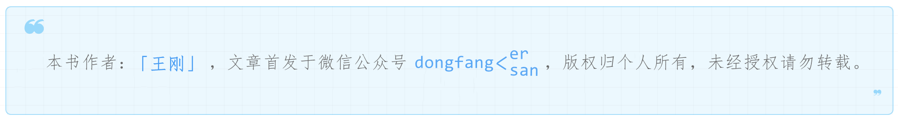

2 揭开DRF序列化技术的神秘面纱¶

在RESTful API中，接口返回的是JSON，JSON的内容对应的是数据库中的数据，DRF是通过序列化（Serialization）的技术，把数据模型转换为JSON的，反之，叫做反序列化（deserialization）。本文就来揭开2揭开DRF序列化技术的神秘面纱技术的神秘面纱。
创建虚拟环境¶
虚拟环境是独立的Python环境，可以和系统环境分离，只安装需要的包即可，使用以下命令创建并激活：
# 创建Python虚拟环境
python -m venv env
# 激活虚拟环境
env\Scripts\activate.bat
# Mac中使用`source env/bin/activate`
退出虚拟环境用deactivate。
接着在虚拟环境中安装本文用到的包：
pip install django
pip install djangorestframework
pip install pygments # 代码高亮
创建项目¶
创建project：
django-admin startproject tutorial
创建app：
cd tutorial
python manage.py startapp snippets
在tutorial/settings.py中的INSTALLED_APPS添加snippets和rest_framework：
INSTALLED_APPS = [
...
'rest_framework',
'snippets.apps.SnippetsConfig',
]
只有添加后，app才会生效哦。
创建model¶
编辑snippets/models.py，创建Snippet模型：
from django.db import models
from pygments.lexers import get_all_lexers
from pygments.styles import get_all_styles
LEXERS = [item for item in get_all_lexers() if item[1]]
LANGUAGE_CHOICES = sorted([(item[1][0], item[0]) for item in LEXERS])
STYLE_CHOICES = sorted([(item, item) for item in get_all_styles()])
class Snippet(models.Model):
created = models.DateTimeField(auto_now_add=True)
title = models.CharField(max_length=100, blank=True, default='')
code = models.TextField()
linenos = models.BooleanField(default=False)
language = models.CharField(choices=LANGUAGE_CHOICES, default='python', max_length=100)
style = models.CharField(choices=STYLE_CHOICES, default='friendly', max_length=100)
class Meta:
ordering = ['created']
Snippet有6个字段，created、title、code、linenos、language、style。
接着同步数据库：
python manage.py makemigrations snippets
python manage.py migrate
创建Serializer¶
rest_framework.serializers的结构如下：
查看Python模块中的成员，需要勾选：
之前我们用过HyperlinkedModelSerializer，是封装后的符合RESTful良好设计的序列化器，这里直接使用更底层的Serializer。在snippets目录下创建serializers.py，添加以下代码：
from rest_framework import serializers
from snippets.models import Snippet, LANGUAGE_CHOICES, STYLE_CHOICES
class SnippetSerializer(serializers.Serializer):
id = serializers.IntegerField(read_only=True)
title = serializers.CharField(required=False, allow_blank=True, max_length=100)
code = serializers.CharField(style={'base_template': 'textarea.html'})
linenos = serializers.BooleanField(required=False)
language = serializers.ChoiceField(choices=LANGUAGE_CHOICES, default='python')
style = serializers.ChoiceField(choices=STYLE_CHOICES, default='friendly')
def create(self, validated_data):
"""
Create and return a new `Snippet` instance, given the validated data.
"""
return Snippet.objects.create(**validated_data)
def update(self, instance, validated_data):
"""
Update and return an existing `Snippet` instance, given the validated data.
"""
instance.title = validated_data.get('title', instance.title)
instance.code = validated_data.get('code', instance.code)
instance.linenos = validated_data.get('linenos', instance.linenos)
instance.language = validated_data.get('language', instance.language)
instance.style = validated_data.get('style', instance.style)
instance.save()
return instance
代码第一部分定义了序列化/反序列化的字段，字段定义方式类似于Form。第二部分的create()和update()方法定义了调用serializer.save()时，创建和更新实例的处理方式。
玩玩Serializer¶
既然已经创建好了Serializer，何不玩玩它？只有玩了才知道序列化的技术细节。这里用到了Django shell，可以在命令行实时看到输出结果：
python manage.py shell
首先通过模型新增2条测试数据：
from snippets.models import Snippet
from snippets.serializers import SnippetSerializer
from rest_framework.renderers import JSONRenderer
from rest_framework.parsers import JSONParser
snippet = Snippet(code='foo = "bar"\n')
snippet.save()
snippet = Snippet(code='print("hello, world")\n')
snippet.save()
接着把它序列化看看：
serializer = SnippetSerializer(snippet)
serializer.data
# {'id': 2, 'title': '', 'code': 'print("hello, world")\n', 'linenos': False, 'language': 'python', 'style': 'friendly'}
因为
snippet变量最后引用的是第2个数据模型的实例，所以这里只显示第2条数据。
serializer.data返回的是个字典，最后把字典转换为JSON：
content = JSONRenderer().render(serializer.data)
content
# b'{"id": 2, "title": "", "code": "print(\\"hello, world\\")\\n", "linenos": false, "language": "python", "style": "friendly"}'
这就是序列化的过程，模型实例→Python字典→JSON。
反序列化的过程是类似的，先把JSON转换为Python字典：
import io
stream = io.BytesIO(content)
data = JSONParser().parse(stream)
再把字典转换为模型实例：
serializer = SnippetSerializer(data=data)
serializer.is_valid()
# True
serializer.validated_data
# OrderedDict([('title', ''), ('code', 'print("hello, world")\n'), ('linenos', False), ('language', 'python'), ('style', 'friendly')])
serializer.save()
# <Snippet: Snippet object>
因为SnippetSerializer的create()方法代码是
return Snippet.objects.create(**validated_data)，所以serializer.save()会在数据库中新增1条数据，并返回Snippet模型实例。
另外，序列化对象不只有模型实例，也可以是数据集：
serializer = SnippetSerializer(Snippet.objects.all(), many=True)
serializer.data
# [OrderedDict([('id', 1), ('title', ''), ('code', 'foo = "bar"\n'), ('linenos', False), ('language', 'python'), ('style', 'friendly')]), OrderedDict([('id', 2), ('title', ''), ('code', 'print("hello, world")\n'), ('linenos', False), ('language', 'python'), ('style', 'friendly')]), OrderedDict([('id', 3), ('title', ''), ('code', 'print("hello, world")'), ('linenos', False), ('language', 'python'), ('style', 'friendly')])]
使用ModelSerializers¶
rest_framework.serializers.Serializers比较底层，需要重复定义model中的字段，DRF的作者当然也想到了这个问题，并且给出了解决办法：把Serializers封装成ModelSerializers。在snippets/serializers.py中替换SnippetSerializer为：
class SnippetSerializer(serializers.ModelSerializer):
class Meta:
model = Snippet
fields = ['id', 'title', 'code', 'linenos', 'language', 'style']
写法果然简洁了很多。使用Django shell打印出来看看：
from snippets.serializers import SnippetSerializer
serializer = SnippetSerializer()
print(repr(serializer))
# SnippetSerializer():
# id = IntegerField(label='ID', read_only=True)
# title = CharField(allow_blank=True, max_length=100, required=False)
# code = CharField(style={'base_template': 'textarea.html'})
# linenos = BooleanField(required=False)
# language = ChoiceField(choices=[('Clipper', 'FoxPro'), ('Cucumber', 'Gherkin'), ('RobotFramework', 'RobotFramework'), ('abap', 'ABAP'), ('ada', 'Ada')...
# style = ChoiceField(choices=[('autumn', 'autumn'), ('borland', 'borland'), ('bw', 'bw'), ('colorful', 'colorful')...
和手动定义的字段一模一样。其实ModelSerializer并没有做额外的处理，我们可以从它的部分代码片段看到:
serializer_field_mapping = {
models.AutoField: IntegerField,
models.BigIntegerField: IntegerField,
models.BooleanField: BooleanField,
# Default `create` and `update` behavior...
def create(self, validated_data):
def update(self, instance, validated_data):
raise_errors_on_nested_writes('update', self, validated_data)
建立字段映射，定义create()和update()等方法，只做了最简单的封装。
编写views¶
我们之前用的是已经封装好的rest_framework.viewsets，这里直接用Django原生的view。在snippets/views.py中添加代码：
from django.http import HttpResponse, JsonResponse
from django.views.decorators.csrf import csrf_exempt
from rest_framework.parsers import JSONParser
from snippets.models import Snippet
from snippets.serializers import SnippetSerializer
先创建snippet_list视图，返回snippets列表或者新建1个snippet：
@csrf_exempt
def snippet_list(request):
"""
List all code snippets, or create a new snippet.
"""
if request.method == 'GET':
snippets = Snippet.objects.all()
serializer = SnippetSerializer(snippets, many=True)
return JsonResponse(serializer.data, safe=False)
elif request.method == 'POST':
data = JSONParser().parse(request)
serializer = SnippetSerializer(data=data)
if serializer.is_valid():
serializer.save()
return JsonResponse(serializer.data, status=201)
return JsonResponse(serializer.errors, status=400)
本文示例中，客户端发起POST请求是不带CSRF
token的，所以需要添加csrf_exempt（exempt翻译为免除）装饰器，允许跨域访问。这里只是演示，实际会使用django-cors-headers来解决跨域问题，而不是给每个view都加上@csrf_exempt。
CSRF是指跨站请求伪造，攻击者盗用你的身份，以你的名义发送恶意请求。CSRF token是指服务器通过token来认证，如果请求中没有token或者token不匹配，那么就认为可能是CSRF而拒绝该请求。
接着添加一个view，对单个snippet进行删（delete）、改（update）、查（retrieve）：
@csrf_exempt
def snippet_detail(request, pk):
"""
Retrieve, update or delete a code snippet.
"""
try:
snippet = Snippet.objects.get(pk=pk)
except Snippet.DoesNotExist:
return HttpResponse(status=404)
if request.method == 'GET':
serializer = SnippetSerializer(snippet)
return JsonResponse(serializer.data)
elif request.method == 'PUT':
data = JSONParser().parse(request)
serializer = SnippetSerializer(snippet, data=data)
if serializer.is_valid():
serializer.save()
return JsonResponse(serializer.data)
return JsonResponse(serializer.errors, status=400)
elif request.method == 'DELETE':
snippet.delete()
return HttpResponse(status=204)
注意，前面create返回的status为201，这里retrieve返回的默认的200，附上几个常见状态码：
200 OK - GET/PUT/PATCH：服务器成功返回用户请求的数据，该操作是幂等的（Idempotent）
201 CREATED - POST：用户新建数据成功
204 NO content - DELETE：用户删除数据成功
400 Invalid request - POST/PUT/PATCH：用户发出的请求有错误，服务器没有进行新建或修改数据的操作，该操作是幂等的
401 Unauthorized - *：表示用户没有权限（令牌、用户名、密码错误）
403 Forbidden - *：表示用户得到授权（与401错误相对），但是访问是被禁止的
最后，添加路由，新建文件snippets/urls.py：
from django.urls import path
from snippets import views
urlpatterns = [
path('snippets/', views.snippet_list),
path('snippets/<int:pk>/', views.snippet_detail),
]
再配置到tutorial/urls.py：
from django.urls import path, include
urlpatterns = [
path('', include('snippets.urls')),
]
测试API¶
启动项目：
python manage.py runserver
新开一个Terminal，安装HTTP命令行工具：
pip install httpie
请求snippets列表：
http http://127.0.0.1:8000/snippets/
HTTP/1.1 200 OK
...
[
{
"id": 1,
"title": "",
"code": "foo = \"bar\"\n",
"linenos": false,
"language": "python",
"style": "friendly"
},
{
"id": 2,
"title": "",
"code": "print(\"hello, world\")\n",
"linenos": false,
"language": "python",
"style": "friendly"
}
]
请求id为2的snippet：
http http://127.0.0.1:8000/snippets/2/
HTTP/1.1 200 OK
...
{
"id": 2,
"title": "",
"code": "print(\"hello, world\")\n",
"linenos": false,
"language": "python",
"style": "friendly"
}
小结¶
不得不说DRF的Tutorial实践性很强，基本上照着做都能敲出来，体验比较好。序列化的过程，就是模型实例→Python字典→JSON的过程。通过本文也理解了在app中models.py→serializers.py→views.py→urls.py的代码编写顺序。